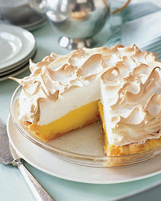

World's Healthiest Foods: Mamas HomeMade Lemon Meringue Pie
World's Healthiest Foods
Mamas HomeMade Lemon Meringue Pie

One 9-inch pie
30 Min-Prep time
10 Min-Cook time
40 Min-Total
8 Servings
Ingredients:
- 1 cup white sugar
- 2 tablespoons all-purpose flour
- 3 table spoons cornstarch
- 1/4 teaspoon salt
- 1 1/2 cups water
- 2 lemons,juiced and zested
- 2 tablespoons butter
- 4 egg yolks ,beaten
- 1(9inch)pie crust,baked
- 4 egg whites
- 6 tablespoons white sugar
Directions:
- Preheat Oven:Preheat oven to 350 degrees F(175 degrees C)
- Make Lemon Filling:In a medium saucepan...
- Whisk together 1 cup sugar,flour,cornsnatch and salt
- Stir in water,lemon juice and lemon zest
- Cook over medium-high heat, stirring frequently,until mixture comes to a boil
- Stir in butter
- Place egg yolks in a small bowl and grdually whisk in 1/2 cup of hot sugar mixture
- Whisk egg yolk mixture back into remaining sugar mixture
- Bring to a boil and continue to cook while stirring constantly until thick
- Remove from heat
- Pour filling into baked pastry shell
- Make Meringue: In a large glass or metal bowl...
- Whip egg whites until foamy
- Add sugar gradually,and continue to whip until stiff peaks from
- Spread meringue over pie, sealing the edges at the crust
- Bake: Bake in preheated oven for 10 minutes, or until meringue is golden brown.